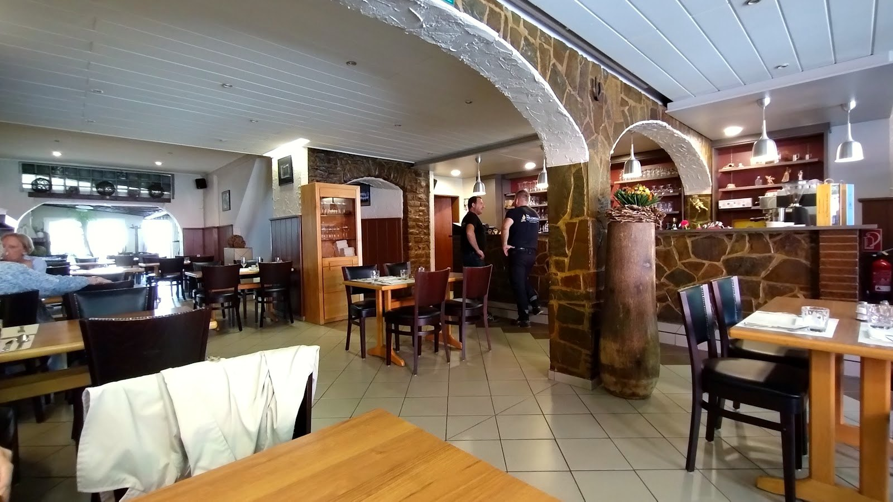
Un coin de Porto à Diekirch.
L'âme portugaise et la table luxembourgeoise, avenue de la Gare — et la meilleure Francesinha du pays, servie généreusement.
« La meilleure du Luxembourg », dit-on.
Le croque-monsieur revisité de Porto : plusieurs viandes serrées entre deux tranches de pain, nappées d'une sauce riche à la bière et à la tomate, un œuf au plat posé dessus. Un plat de caractère, généreux, qu'on ne partage pas — on le mérite.
Recette de la maison — préparation et accompagnements à confirmer sur place.
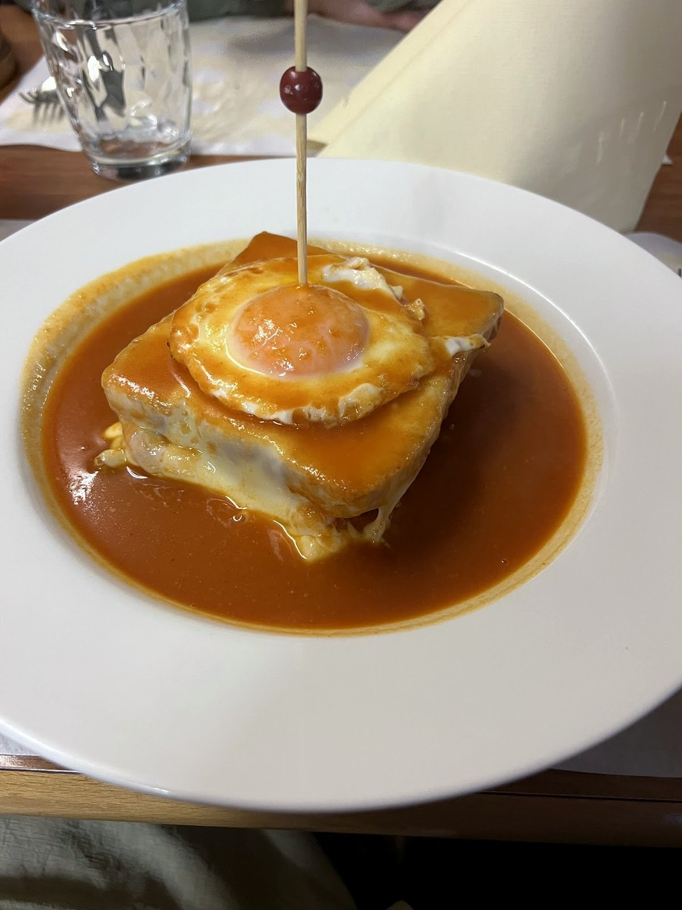
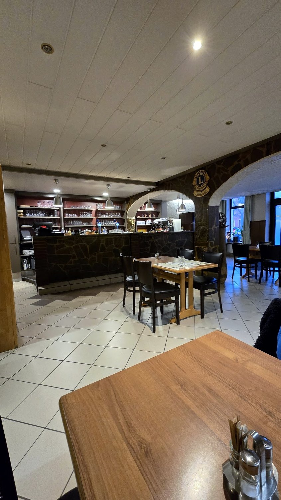
Sous les arches de pierre de l'avenue de la Gare, le Jardin du Portugal réunit deux cuisines qui se ressemblent plus qu'on ne croit : la générosité portugaise et la robustesse luxembourgeoise. Poissons et morue, viandes grillées, portions franches, service souriant.
Une adresse de famille, sans esbroufe, où l'on vient pour bien manger et repartir content — un petit voyage à Porto sans quitter l'Éislek.
Le bacalhau à Brás en tête — effiloché, œufs, pommes paille, olives.
Brochettes marinées sur pique, entrecôtes, poulpe grillé à l'huile d'olive.
Crème brûlée, mousse au chocolat, dessert du jour — la maison a la dent sucrée.
Une sélection représentative. Les plats varient au fil du marché — la carte complète et les prix sont à confirmer avec la maison.
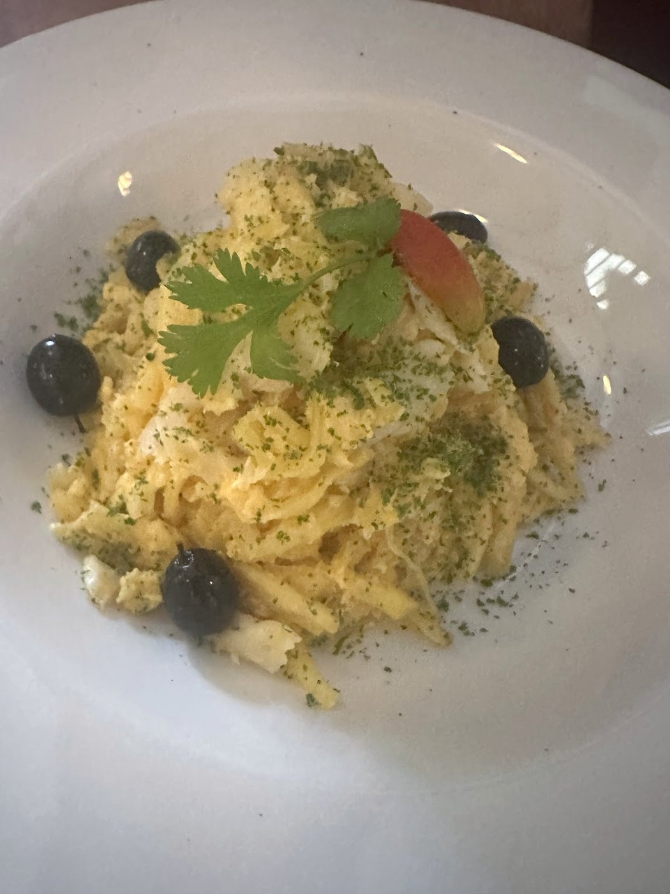
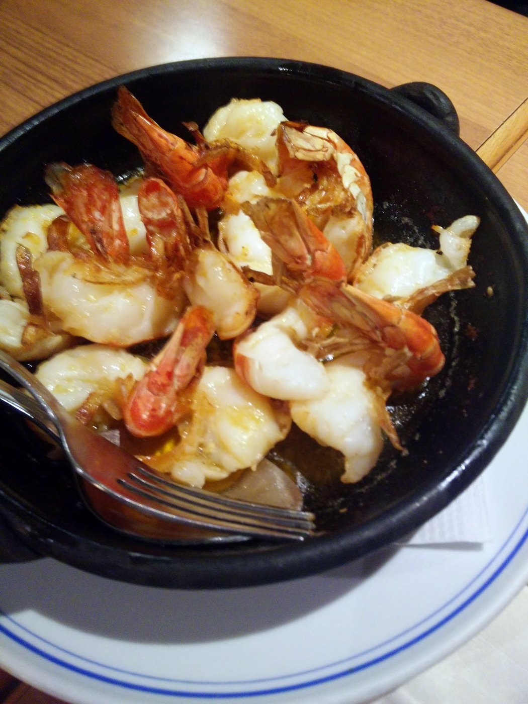
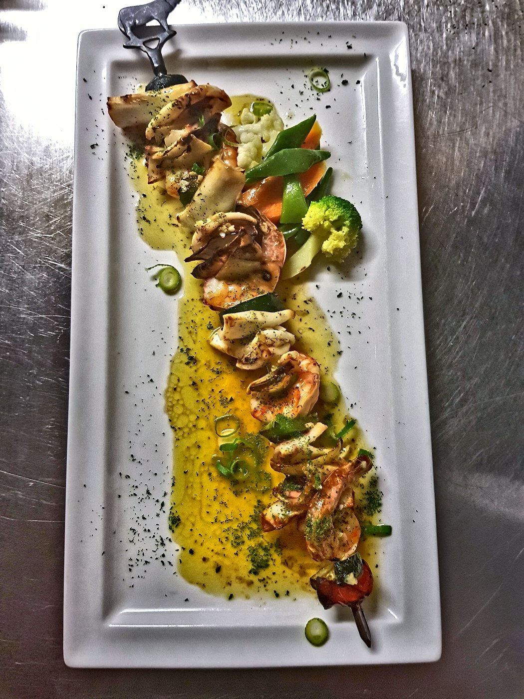
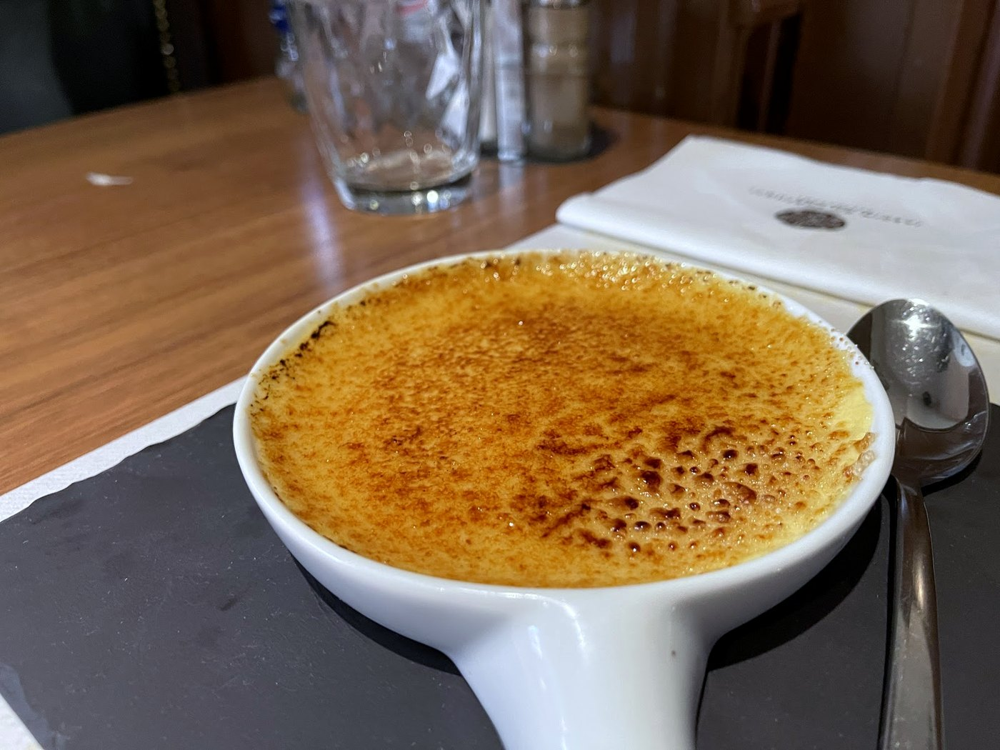
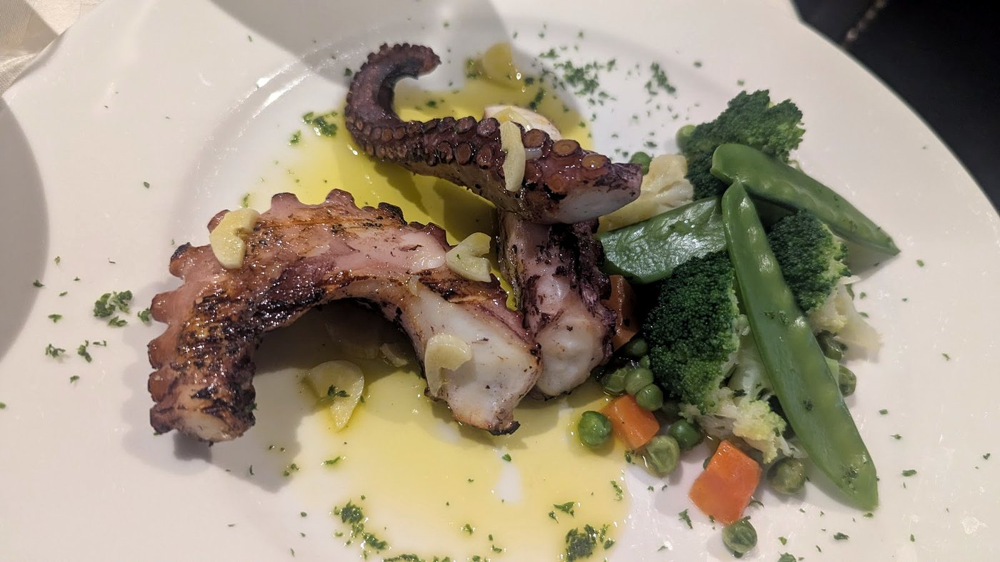
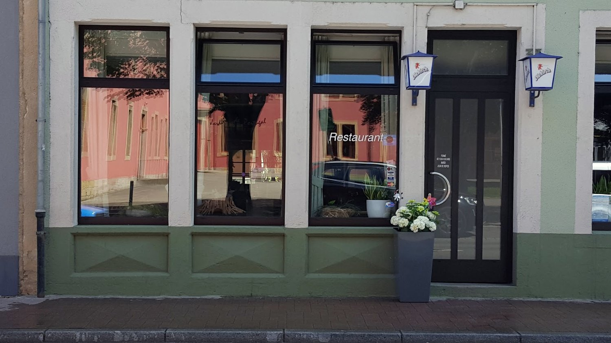
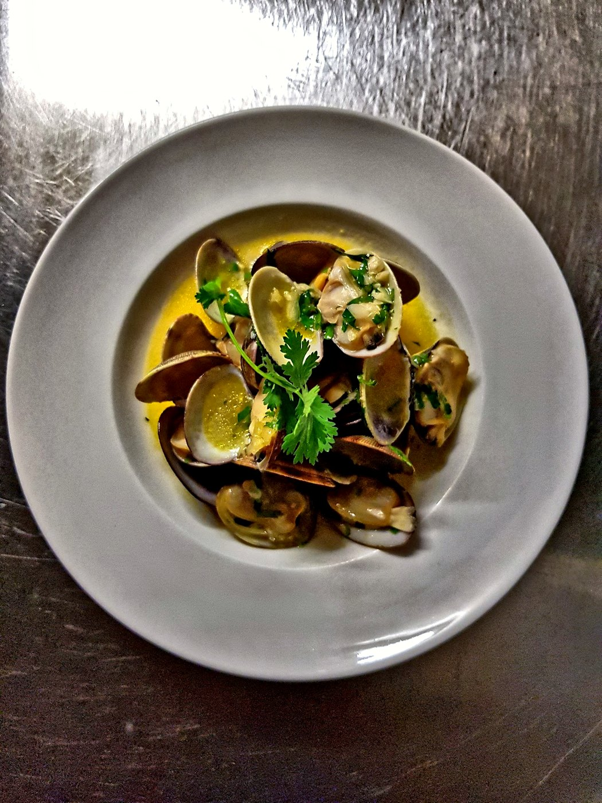
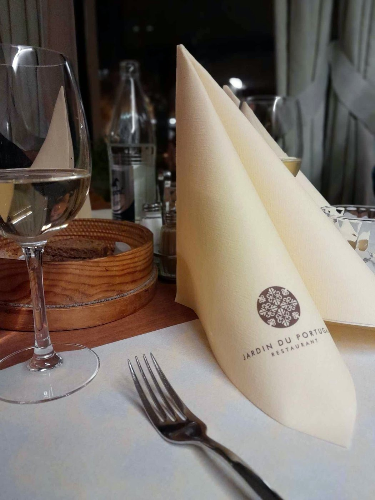
Service 11h30–14h & 18h30–21h30. Fermé le mardi et le dimanche soir. Horaires indicatifs — à confirmer avec la maison.